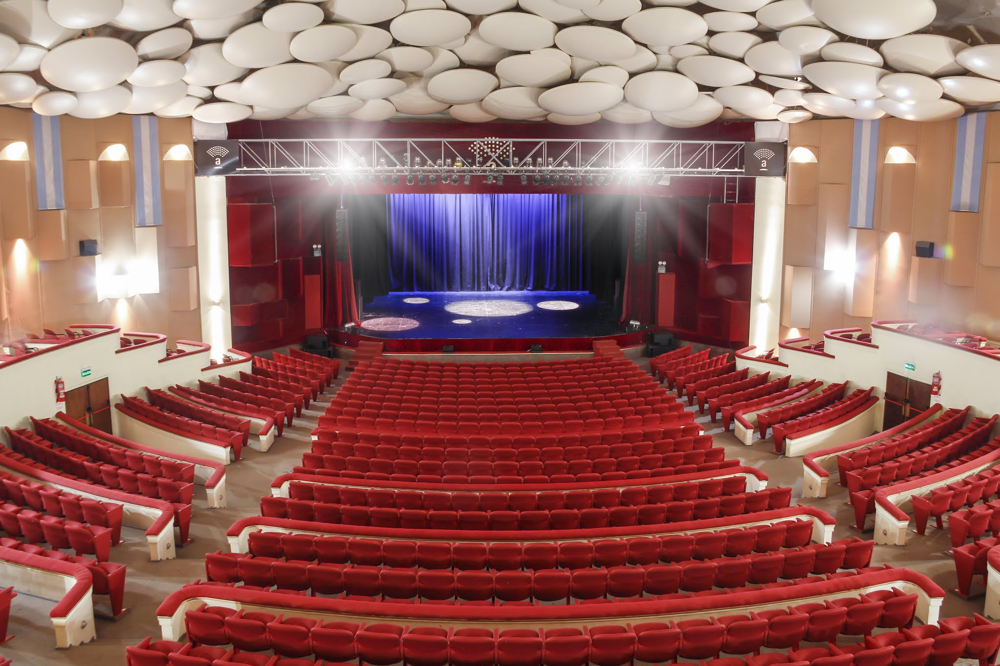
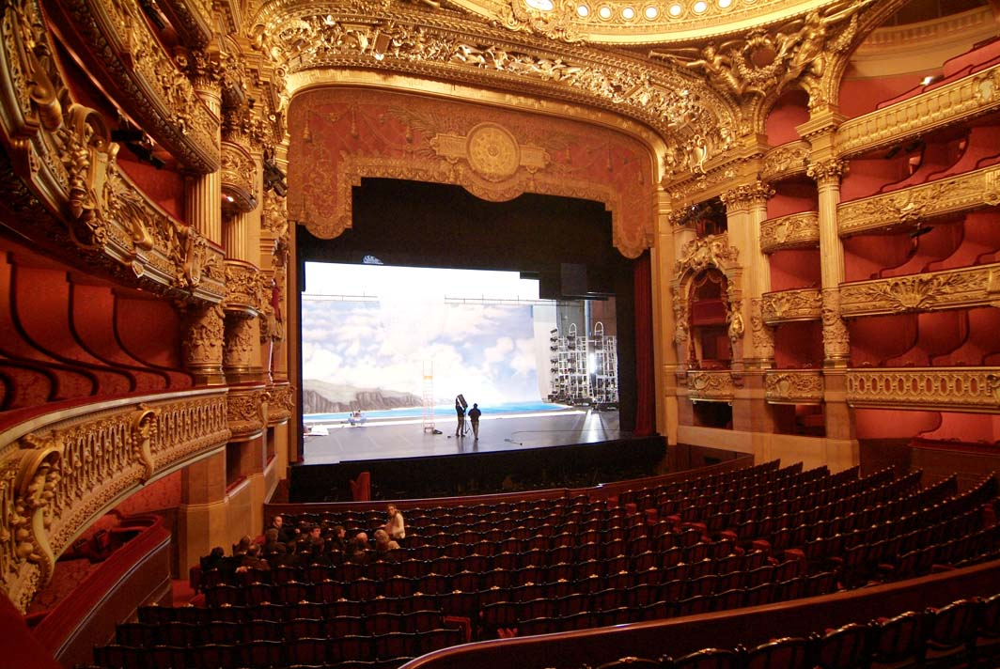

Sala 1: Teatro Moderno
Un espacio amplio con diseño moderno, butacas en pendiente y un escenario de proscenio muy visible. Destaca por su iluminación LED y tecnología de efectos visuales sobre el escenario.
Comprar Funciones

Sala 2: Teatro Clásico
Una sala suntuosa, típicamente de estilo "a la italiana" o proscenio, con palcos laterales lujosos y rica ornamentación en dorado y rojo. El foco está en la gran boca del escenario.
Comprar Funciones
Sala 3: Teatro Histórico
Un teatro tradicional con una disposición de butacas más vertical y varios niveles de palcos y balcones que rodean la sala. Predomina la decoración antigua y la estructura en herradura.
Comprar Funciones